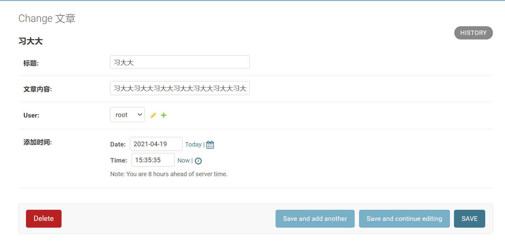

Contents
22.4.14. 违禁词自审查功能¶
常见的违禁词自审查功能分为两种：
- 一种是用户提交发表的内容，在经过网站的违禁词自审查检验时，发现内容中包含了一些违禁词之后，提示用户发表失败，并且提示用户内容中有哪些违禁词，要求用户修改内容，或者放弃发表。这种违禁词自审查功能大多用于长篇博客、影评、网络小说等篇幅较大的内容审查中。
- 另外一种则是比较适合评论、发帖子、公屏交流等内容篇幅比较小的应用场景，这种违禁词自审查功能会将检测到的违禁词自动替换为*号。
1. 违禁词自审查功能的重要性¶
1.1 违禁词的影响¶
从产品角度上看，一个互联网平台一旦没有违禁词自审查功能，用户之间很容易因为一点口角，演变成性质非常恶劣的骂战，从而令整个平台的内容质量下降。内容质量降低，必将导致大批用户的流失。
而违禁词自审查功能，将用户之间因为口角而发出的一些过激词汇隐藏，可以有效地减弱用户的负面情绪，也消除了个别用户之间的矛盾对其他用户的影响。
1.2 可以避免法律风险¶
众所周知，《广告法》是为了保护广大消费者不被黑心商家蒙骗的一部法律，而且《广告法》不但保护消费者，也保护守法商家不被恶意竞争所攻击。《广告法》规定，广告中不得出现有可能对消费者产生误导的词汇。互联网本身也具有媒体属性，很多文章看起来是一篇博客，其实是一篇软文广告，如果没有违禁词自审查功能，经过辛苦经营获取大量用户的网络，可就要成为某些商家打广告的地方。而广告的内容泛滥，质量参差不齐，身为平台的搭建方，如果不做好内容审查的工作，将面临巨大的法律风险。
2. Django REST framework实现模糊搜索功能¶
模糊搜索，顾名思义是用于网站内部的搜索。
2.1 演示实现模糊搜索的后端逻辑¶
我们先建立一个Django项目负责实现模糊搜索功能的后端逻辑。新建Django项目，并且安装相关依赖包，编写相关基础代码，步骤如下所述。
（1）新建Django项目，命名为demo7，新建App并命名为app01。
（2）安装Django REST framework及其依赖包markdown和Django-filter。
pip install djangorestframework markdown Django-filter
（3）在settings.py中添加注册代码：
INSTALLED_APPS = [
'django.contrib.admin',
'django.contrib.auth',
'django.contrib.contenttypes',
'django.contrib.sessions',
'django.contrib.messages',
'django.contrib.staticfiles',
'app01.apps.App01Config',
'rest_framework',
]
（4）执行数据更新命令：
python manage.py makemigrations
python manage.py migrate
（5）在app01/models.py内新建表类代码
from django.db import models
from django.contrib.auth.models import AbstractUser
from datetime import datetime
# Create your models here.
class UserProfile(AbstractUser):
"""
用户表
"""
user_type_chioces = (
(1, "普通用户"),
(2, "版主"),
(3, "管理员"),
)
level = models.IntegerField(choices=user_type_chioces, default=1)
add_time = models.DateTimeField(default=datetime.now, verbose_name='添加时间')
class Meta:
verbose_name = '用户'
verbose_name_plural = verbose_name
def __str__(self):
return self.username
class Article(models.Model):
"""
文章表
"""
title = models.CharField(max_length=30, verbose_name='标题')
content = models.CharField(max_length=5000, verbose_name='文章内容')
user = models.ForeignKey(UserProfile, on_delete=models.CASCADE)
add_time = models.DateTimeField(default=datetime.now, verbose_name='添加时间')
class Meta:
verbose_name = '文章'
verbose_name_plural = verbose_name
def __str__(self):
return self.title
（6）在settings中配置用户表的继承代码：
AUTH_USER_MODEL='app01.UserProfile'
（7）再次执行数据更新命令：
python manage.py makemigrations
python manage.py migrate
（8）建立一个超级用户，用户名：root，密码：root1234
python manage.py createsuperuser
（9）在app01/admin.py中注册表：
from django.contrib import admin
from .models import UserProfile, Article
# Register your models here.
admin.site.register(UserProfile)
admin.site.register(Article)
（10）运行demo7项目，然后通过浏览器访问： http://127.0.0.1:8080/admin/，输入用户名root，密码root1234，然后单击登录按钮，进入demo7的后台管理页面，
（11）在后台管理页面添加文章数据。在此处可多添加几篇文章记录如图
